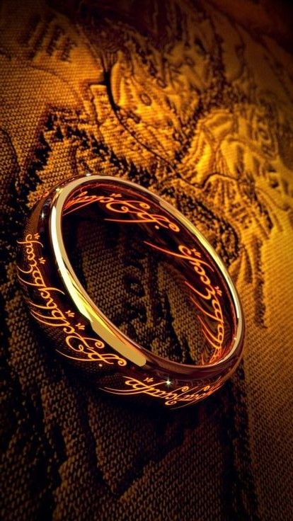
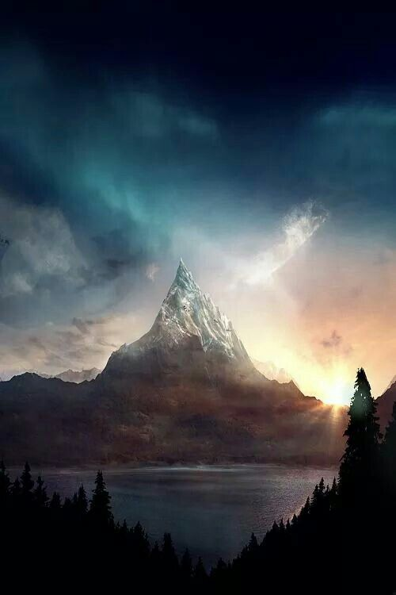
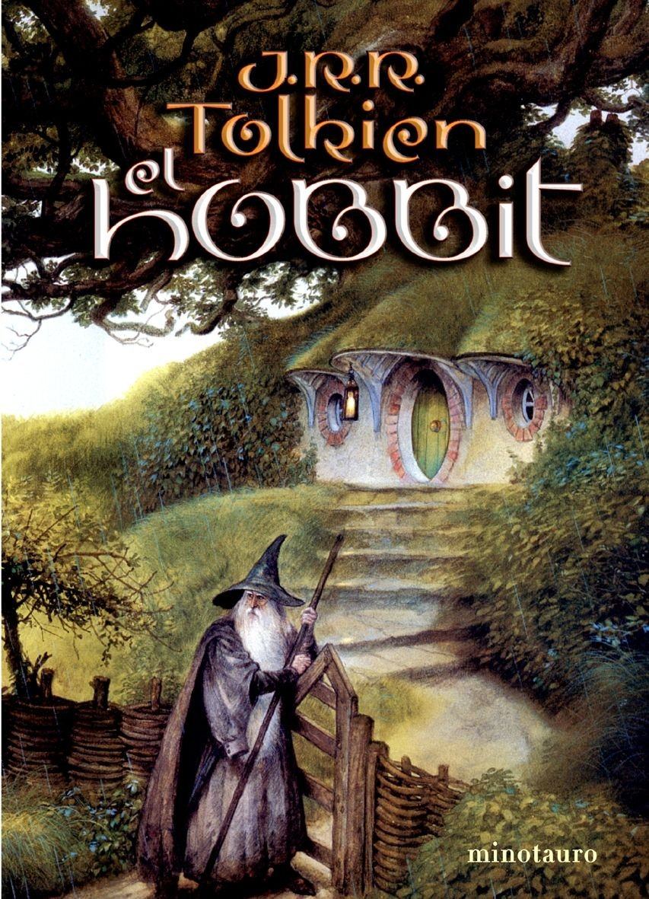
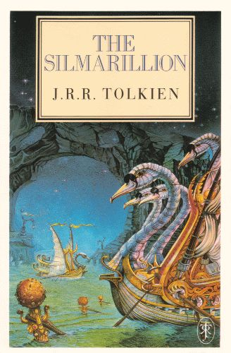
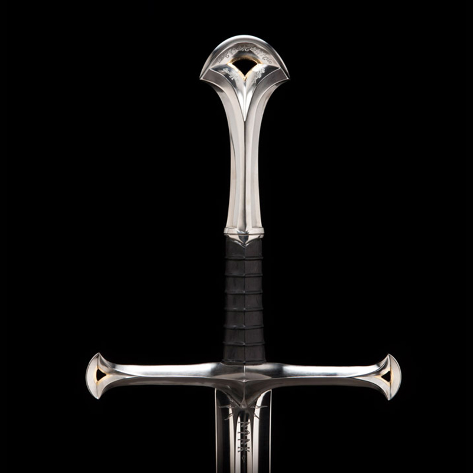
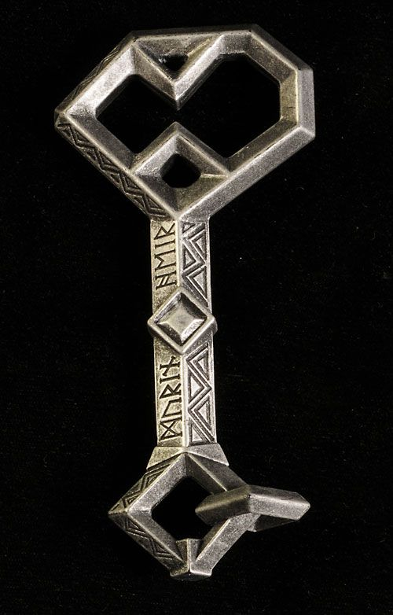

💍 El Anillo Único

Descubre el origen del artefacto de Sauron, las inscripciones en la Lengua Negra y el peso que corrompió a los grandes reyes de los hombres.
Explorar Lore
El portal definitivo para los apasionados del universo de J.R.R. Tolkien
Adéntrate en los secretos de Arda. Desde la creación del mundo por Ilúvatar hasta las heroicas batallas de la Tercera Edad. Aquí encontrarás análisis profundos, cronologías detalladas y las mejores recomendaciones para expandir tu biblioteca tolkiendil.

Descubre el origen del artefacto de Sauron, las inscripciones en la Lengua Negra y el peso que corrompió a los grandes reyes de los hombres.
Explorar Lore
Analizamos de forma definitiva la pregunta más repetida: ¿Por qué las Grandes Águilas de Manwë no volaron directamente hacia el Monte del Destino?
Leer DebateSi quieres empezar a leer pero te abruma el orden, te recomendamos las mejores ediciones para tu colección:

La aventura inicial de Bilbo Bolsón, perfecta para comenzar el viaje.
Recomendado ★★★★★ Ver en Amazon
Para los que buscan la mitología profunda y la creación de los Silmarils.
Nivel Avanzado 🔥 Ver en AmazonExplora los objetos más icónicos y las réplicas oficiales de las películas para decorar tu propio rincón de la Comarca:

Espectacular réplica oficial a escala real de la espada del Rey Aragorn, forjada a partir de los fragmentos de Narsil con inscripciones rúnicas auténticas.
Objeto de Culto 🗡️ Ver Detalles
Fiel réplica de metal envejecido de la llave utilizada por Thorin Escudo de Roble y la Compañía de los Enanos para abrir la puerta secreta de la Montaña Solitaria.
Edición Limitada 🗝️ Ver DetallesLos secretos mejor guardados y los relatos que las películas no te contaron de forma detallada:
Descubre al ser más misterioso de Arda. Existía antes de los ríos y los árboles, y el Anillo Único no tiene absolutamente ningún poder sobre él.
Descubrir SecretoAntes de reclamar el trono de Gondor, el dúnadan recorrió los salvajes territorios del norte bajo falsos nombres, protegiendo las fronteras como Montaraz.
Explorar ViajesLas verdaderas penurias y horrores que sufrieron los hobbits al adentrarse en los dominios del Viejo Hombre-Sauce antes de conocer a los Ents.
Leer Relato